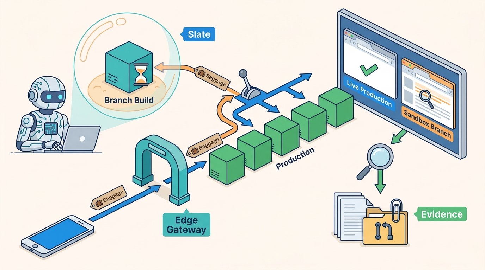

Part III — LIFECYCLE: The Feature Path, Rewired
Slate: Letting Agents Test Their Own Changes End to End

Image generated by Google Gemini (gemini-3-pro-image-preview)
Part III — LIFECYCLE: The Feature Path, Rewired

Image generated by Google Gemini (gemini-3-pro-image-preview)